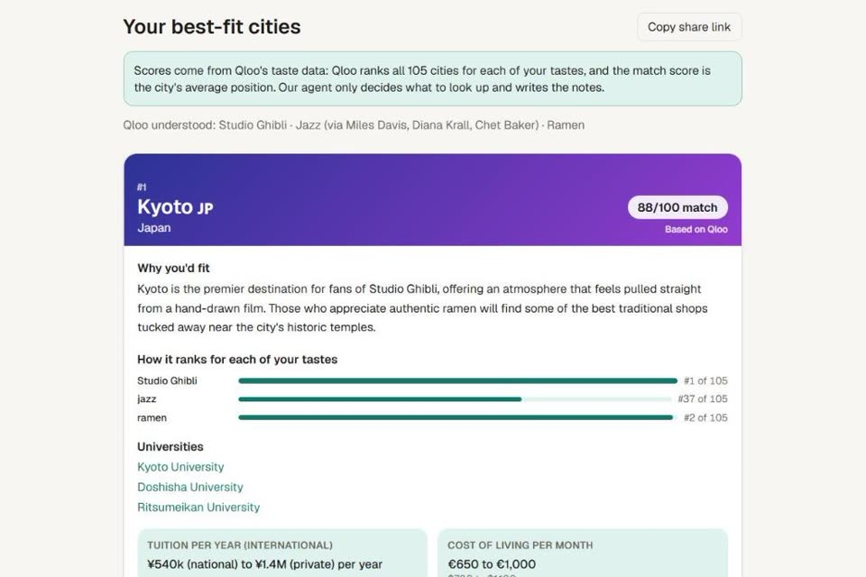
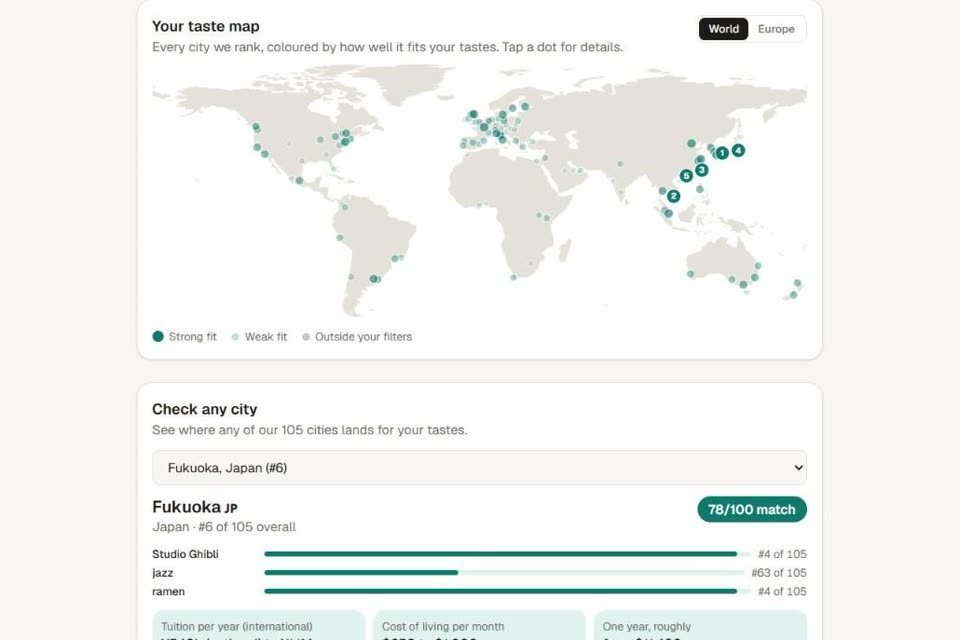
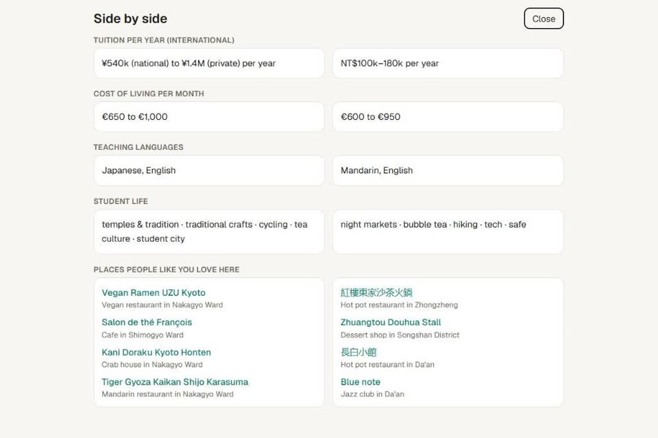
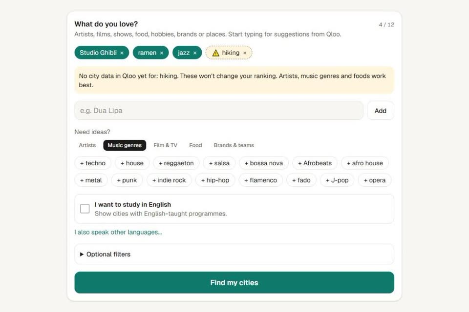

Students pick a city to study abroad from rankings and tuition, then find out the city doesn't fit
them. TasteAbroad asks a different question: will I feel at home there? You type what you love, an
AI agent (Gemini with function calling) asks Qloo's taste API to rank 105 university cities once
for each of your tastes, and you get your top matches with a score you can check: every card shows
where the city ranks for each taste. Universities, tuition, living costs, Erasmus+ and scholarship
links come with it.




- Scores come only from Qloo's data; the AI picks the lookups and writes the notes.
- Searches show cities in about 10 to 20 seconds, even when the free Gemini tier is slow: two models are asked at once and the first answer wins.
- Next.js, TypeScript, Tailwind CSS, Qloo API, Gemini API, deployed on Vercel.
Roblox game · beta, since September 2026
Pet Sanctuary Sim
A pet-collection game on Roblox that I designed and lead. I designed all 100+ pets, 11 eggs and 9
themed worlds, and the economy behind them, with rarity odds down to 1 in 5,000,000. I used AI coding
agents as my development team: I wrote the design specs, play-tested every build and directed 18
feature releases.
- 110+ scripts and 78 server-validated actions, with anti-cheat checks on every purchase and reward.
- Saved progress with versioned DataStores, global and weekly leaderboards, and mail between servers.
- Tested with 2,500+ deliberately invalid server calls, save and load audits, and layout checks on PC and mobile.
- Luau, Roblox Studio.
Internship · UnionNet (Western Union "Dodona"), summer 2026
Network and web setup for a business
In a 272-hour internship I set up most of the IT for a business, from cables to the website, and
then trained the staff to use it.
- Wi-Fi with Ubiquiti UniFi: controller, main and guest networks on separate VLANs, coverage measured.
- CCTV: Cat 6 cabling, RJ45 termination and tests, PoE switch, NVR and secure remote access.
- Website for the "Dodona Brand": layout, product catalogue, responsive design, contact form.
- TTLock smart locks with users, codes and schedules, plus a network plan and user manuals.